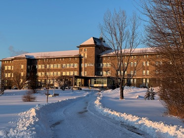
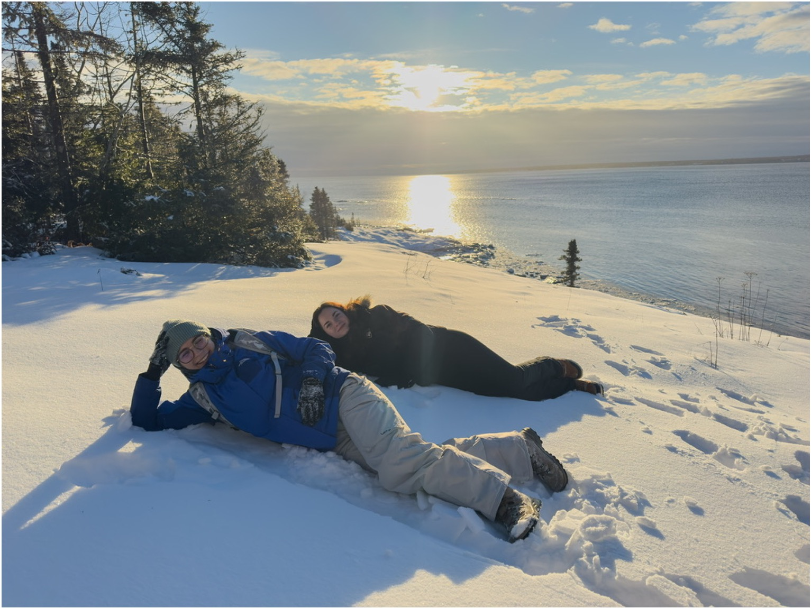
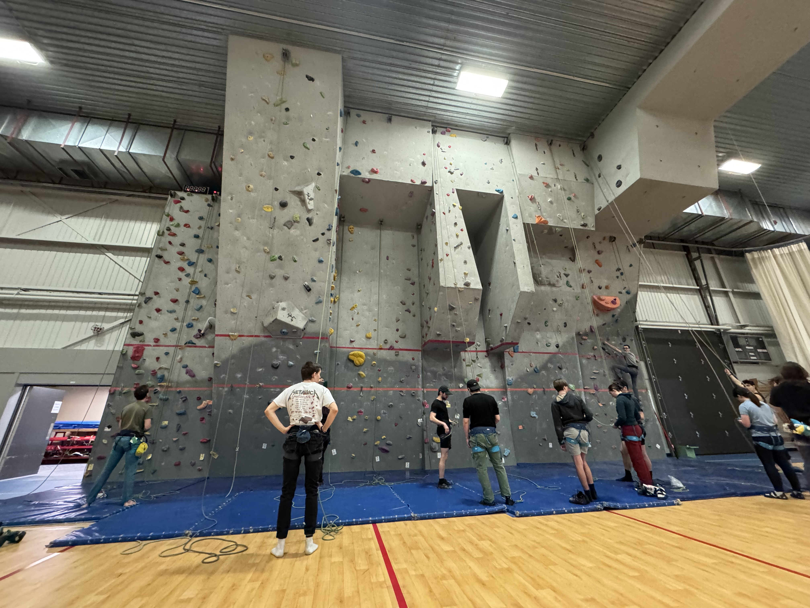

Autonomie et adaptation
Vivre plusieurs mois à l’étranger m’a demandé de m’organiser différemment, de gérer mon quotidien et de m’adapter à un nouveau rythme d’études.
Québec · Baie-Comeau · Mobilité
De janvier à mai 2025, dans le cadre de mon parcours en BUT Génie Civil — Construction Durable, j’ai eu l’opportunité de partir au Québec, à Baie-Comeau. Cette mobilité m’a permis de suivre des enseignements dans un environnement différent de celui de l’IUT, de découvrir une autre manière d’aborder le génie civil et de gagner en autonomie, aussi bien dans ma formation que dans ma vie personnelle.

Contexte de la mobilité
J’ai réalisé cet échange au Cégep de Baie-Comeau, au Québec, de janvier à mai 2025. Sur place, j’ai suivi des cours correspondant principalement à des enseignements de deuxième et troisième année de la formation locale. Cette mobilité m’a permis de découvrir un autre cadre pédagogique, d’autres références réglementaires et une culture technique différente.
“Avec le recul, cet échange fait partie des expériences qui m’ont le plus marqué dans mon parcours. J’y ai découvert une autre manière d’apprendre, un territoire très différent, et un cadre de vie qui m’a donné envie de m’impliquer pleinement.”
Mobilité internationale — Cégep de Baie-ComeauApports principaux
Au-delà des cours, cette mobilité a été un vrai temps de recul sur ma formation. Elle m’a permis de mieux identifier mes acquis, de prendre confiance dans mon parcours et de renforcer ma capacité à m’adapter à un environnement inconnu.
Vivre plusieurs mois à l’étranger m’a demandé de m’organiser différemment, de gérer mon quotidien et de m’adapter à un nouveau rythme d’études.
Les cours m’ont permis de comparer les approches françaises et québécoises, notamment sur les normes, les projets, les travaux pratiques et la place donnée aux rappels de bases.
La vie au Cégep, les activités, les voyages et les rencontres ont renforcé ma curiosité, ma confiance et ma capacité à échanger dans un contexte nouveau.
Cours suivis
Les enseignements suivis m’ont permis de retrouver certaines bases déjà abordées en France, mais aussi de découvrir des contenus nouveaux, notamment sur les enrobés bitumineux, le génie municipal et l’inspection de barrages.
Ce cours m’a permis de découvrir un sujet peu abordé dans mon parcours en France. Les travaux pratiques ont été particulièrement utiles pour comprendre les formulations, les essais et les enjeux liés aux chaussées.
Ce cours faisait écho aux enseignements de BIM déjà suivis à l’IUT, tout en apportant une approche différente de la maquette numérique. Il m’a notamment permis d’approfondir l’utilisation de Revit sur certains lots techniques, comme la ventilation.
Un enseignement très utile pour consolider les bases et travailler sur le dimensionnement de petits réseaux. La méthode liée aux bassins versants, différente de celle apprise en France, m’a permis de comparer plusieurs approches de calcul.
Le projet final, basé sur un relevé topographique puis un métré, était particulièrement intéressant. Le cours m’a aussi montré l’importance de savoir rechercher, comprendre et appliquer des normes propres à un territoire.
Ce cours a permis de reprendre et de consolider des bases essentielles en géotechnique. Ces rappels ont été utiles pour renforcer les acquis et mieux faire le lien avec les applications de dimensionnement.
Une matière très marquante, avec des travaux pratiques et des visites particulièrement intéressants. Elle m’a permis d’aborder la surveillance, l’observation et l’analyse d’ouvrages sous un angle très concret.
Un cours utile pour continuer à progresser dans la communication en contexte international, avec un cadre clair et adapté à l’échange.
Les cours ne demandaient pas de prérequis très lourds au-delà des bases de première année. Les rappels en début de session facilitaient l’intégration et permettaient de suivre correctement les enseignements.
Vie sur place
La vie au Cégep a été un point fort de l’échange. Les activités organisées le midi et pendant les vacances participaient vraiment à l’intégration. Elles donnaient envie d’aller au Cégep, de rencontrer du monde et de profiter de l’expérience au-delà des cours.
Le logement a aussi contribué à rendre l’installation simple et rassurante. Les courses prévues le soir de notre arrivée ont été très appréciées, car elles ont facilité les premiers jours sur place et nous ont permis de nous concentrer rapidement sur la découverte du Cégep et de la ville.
Découvertes personnelles
Cette mobilité a aussi été l’occasion de découvrir le Québec et une partie du Canada. Ces moments ont fortement contribué à mon bilan positif de l’échange.

Le climat et les paysages ont rendu l’expérience très dépaysante, avec de nombreuses sorties dans la neige.

J’ai pu pratiquer l’escalade sur place, ce qui a renforcé le côté humain et personnel de l’échange.
Les vacances ont permis de découvrir Montréal, Québec et les chutes du Niagara, avec notamment une activité de tyrolienne.
Bilan personnel
Cet échange international m’a permis de sortir de mon cadre habituel et de mieux comprendre ce que je voulais construire dans la suite de mon parcours. J’ai pu comparer des méthodes d’enseignement, découvrir d’autres références techniques, développer mon autonomie et vivre une expérience humaine très riche.
Avec le recul, je garde un excellent souvenir de ce semestre à Baie-Comeau. Le Cégep, les cours, les activités, les voyages et la vie sur place ont formé une expérience complète, qui m’a apporté autant sur le plan personnel que professionnel. Cette mobilité montre ma capacité à m’adapter, à apprendre dans un contexte différent et à tirer parti d’une opportunité pour progresser.